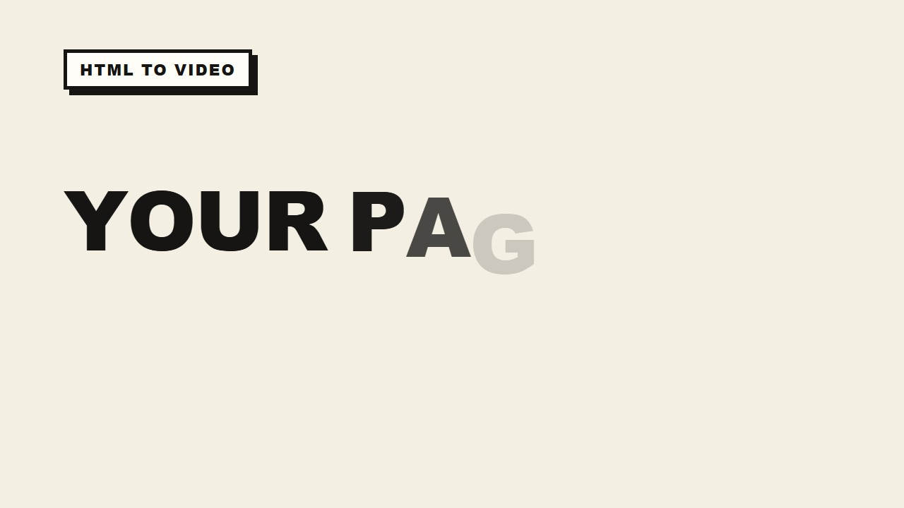
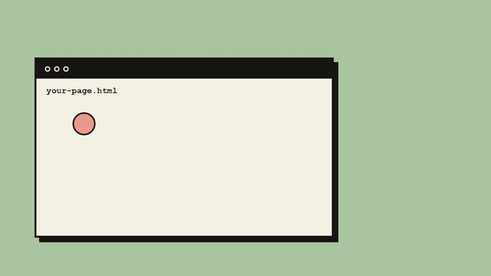
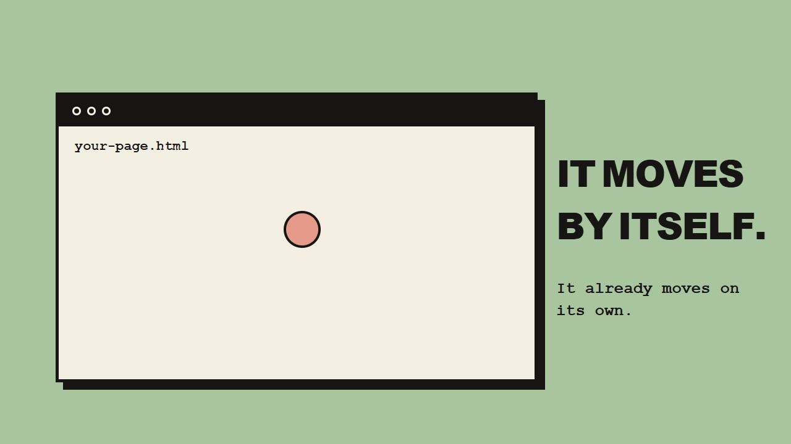
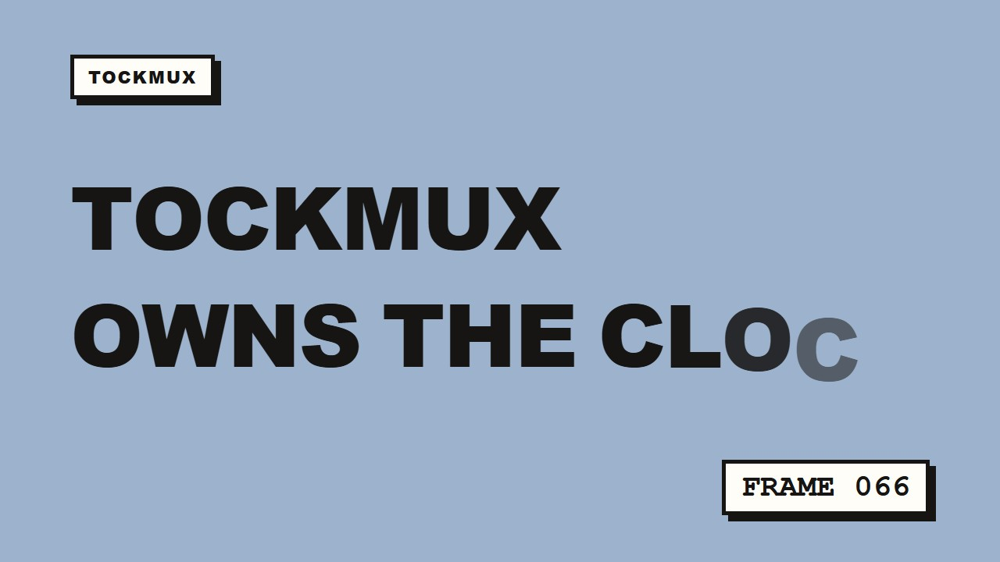
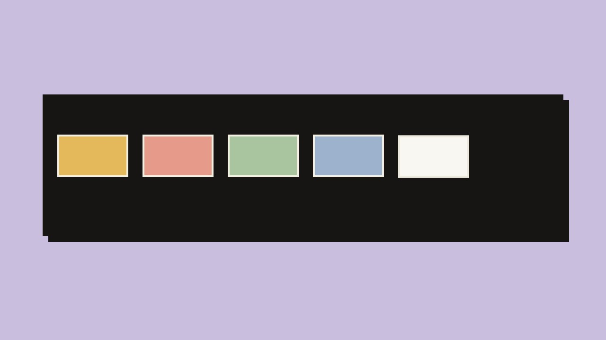
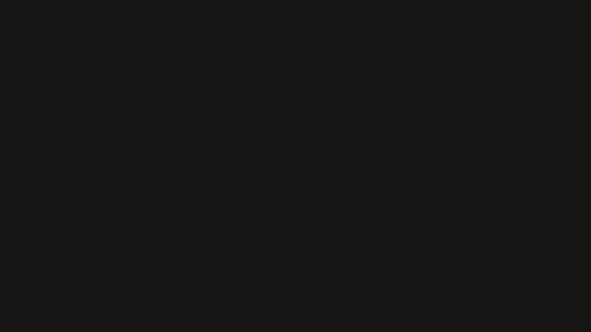
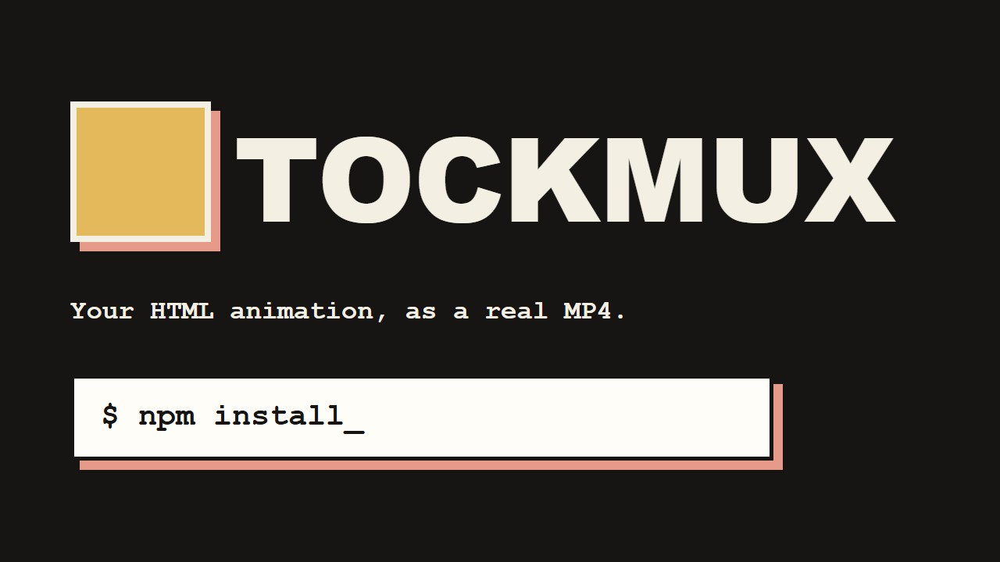
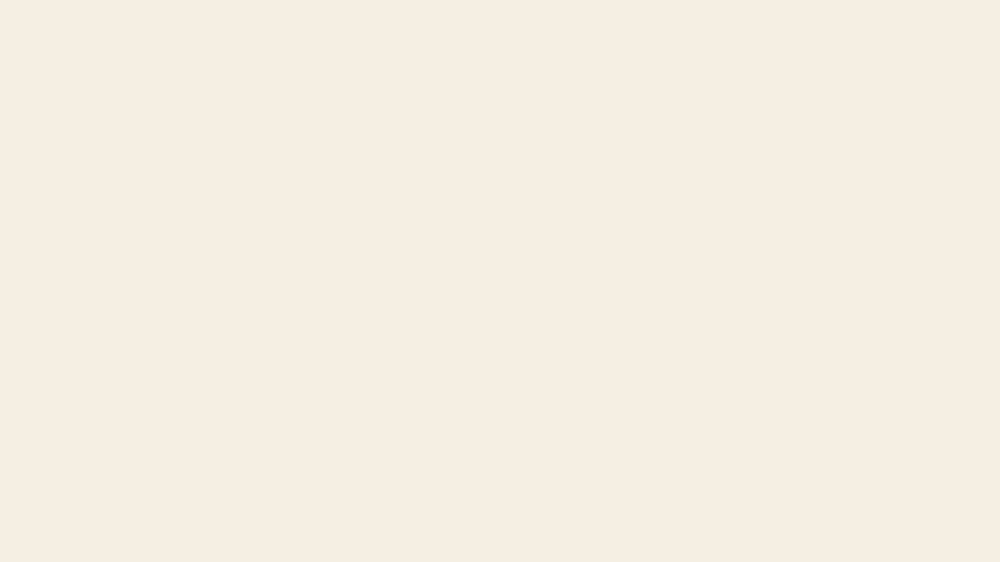

Your page moves. Now it plays.
TockMux takes an HTML animation and records it one frame at a time, on a clock it controls. The MP4 is smooth, the exact size you asked for, and identical on every computer. No screen recording. No dropped frames.
Needs Node.js 20 or newer. Then run tockmux setup once to fetch the browser.








--duration.Watch the film.
This film was rendered by TockMux itself, from a plain HTML page with CSS and JavaScript animation. Nothing was recorded from a screen.
why it matters
Stop filming your screen.
Animated pages are easy to make now and hard to post. A screen recording stutters, changes every time and comes out the wrong size. TockMux replaces that step with a render you can repeat.
Same frames, every time
Render again tomorrow, on another computer, and get the same picture.
The size you chose
TikTok, YouTube, square, 4K, or your own size. Not whatever your window happens to be.
Narration that fits
--auto-fit stretches the animation until it matches the voice.
Creators, developers and teams
Creators turn one animation into many posts. Developers render inside a build or CI job with one convert() call. Teams keep one source file and re-render when the copy changes.
No editor open
From an HTML file to a finished video in a single line.
Take control of time.
A page only looks different from run to run because it reads the clock. TockMux replaces every clock the page can see before it loads. Then time moves only when TockMux says so.
Virtual time
Timers, animation frames, Date, performance.now(), CSS animations and Math.random all wait for TockMux.
One frame at a time
Each frame moves the clock by exactly 1/30 of a second. The page reacts in order, every time.
Pictures into video
Each picture goes to FFmpeg. Long films render in parallel segments and join without re-encoding.
features
Nothing you don't need.
A numbered menu
Type tockmux and pick a number: render a file, paste HTML, try a sample, watch a file, check it, or open Studio.
Render on save
tockmux watch re-renders every time you save the file.
Check before you wait
Finds still images and forgotten clicks before a long render.
A whole folder
tockmux batch ./slides --out-dir ./videos renders a set in one go.
Title films
Short scripts with titles, counters and bars. No HTML needed.
Plain-English errors
Each problem has a line number and a fix. tockmux doctor checks the setup.
start
Three lines. Then a film.
Or type tockmux on its own and pick from the menu.
npm install -g tockmux
tockmux setup
Skipped if you already have Chrome or Edge.
tockmux render my.html tockmux watch my.html
limits
Files, lengths and limits.
Precise on purpose, so you know before you start.
| File | What it is for | Notes |
|---|---|---|
.html, .htm | A page that moves by itself | The main input. CSS, JavaScript, canvas, SVG, GSAP and Lottie work. |
.tmx | A title film, written as a script | No HTML needed. |
.mp4 | An existing video, for sync | Add a voice-over or music to it. |
.mp3 and other audio | Voice-over or music | MP3 is the format that is tested. |
Anything else, such as .txt, .pdf, .docx, or a lone .png or .jpg, is refused. Images and fonts a page uses are fine.
Without a length the video is 10 seconds. Set it with --duration 20 or a meta tag.
A 30-second 1280×720 film takes about 40 to 50 seconds on a normal computer.
MP4 has sound and is the default. GIF is for loops. WebM is for web embeds.
YouTube, HD 720, TikTok 1080×1920, square, portrait, cinema at 60 fps, and 4K.
Pages that need a click, typing or a login (a single click at the start works with --start). Sound the page plays itself (use --voice or --music). Protected embeds such as YouTube.
Run tockmux check landing.html first.
Record it for a set time
tockmux render landing.html --duration 20
Describe the look
A static page renders as a still image. /tockmux:make writes an animated page to match your description.
/tockmux:make a 20-second promo, warm colours
Ask in plain words.
TockMux runs as an MCP server. Claude Desktop, Claude Code, Cursor and other assistants can check a page, look at a frame, and render the film while you watch. It can only read and write inside the folder you start it in.
# add the MCP server (Claude Code) claude mcp add tockmux -- npx -y tockmux mcp # or install the Claude Code plugin /plugin marketplace add Anand2k29/TockMux /plugin install tockmux@tockmux
Same engine, in code.
Import the engine behind the command line. Build scripts and apps can render videos with the same frame-perfect output.
import { convert } from "tockmux"; const result = await convert({ input: "promo.html", flags: { output: "promo.mp4", preset: "tiktok" } }); console.log(result.output, result.durationSec);
Good questions.
Q1Can every HTML file become an MP4?
Any page that plays by itself over time. Pages that wait for a click, a keypress or a login cannot be recorded without a person. tockmux check tells you which kind yours is.
Q2Does it need the internet?
Rendering runs on your computer. Only the optional ElevenLabs narration talks to an online service, with keys you own.
Q3Is it safe to run other people's HTML?
Treat it like opening the file in a browser. Studio listens only on your own computer. If you host TockMux as a public service, run each job in an isolated container.
Q4Is it free?
Yes. TockMux is MIT licensed. You need Node.js and a Chromium-based browser, which tockmux setup can fetch.
Q5Windows, macOS, Linux?
Windows is tested on every change. macOS is being worked on, and Linux has not been tested yet. Help is welcome: see CONTRIBUTING.md.
credits
Say hello.
Questions, bugs, ideas, or a film you made that you want to show off.
Discord
Spidey_Moon
Fastest way to reach me. Send the question and the file you are working on.
GitHub
Anand2k29
Report issues, suggest features, and follow the code.